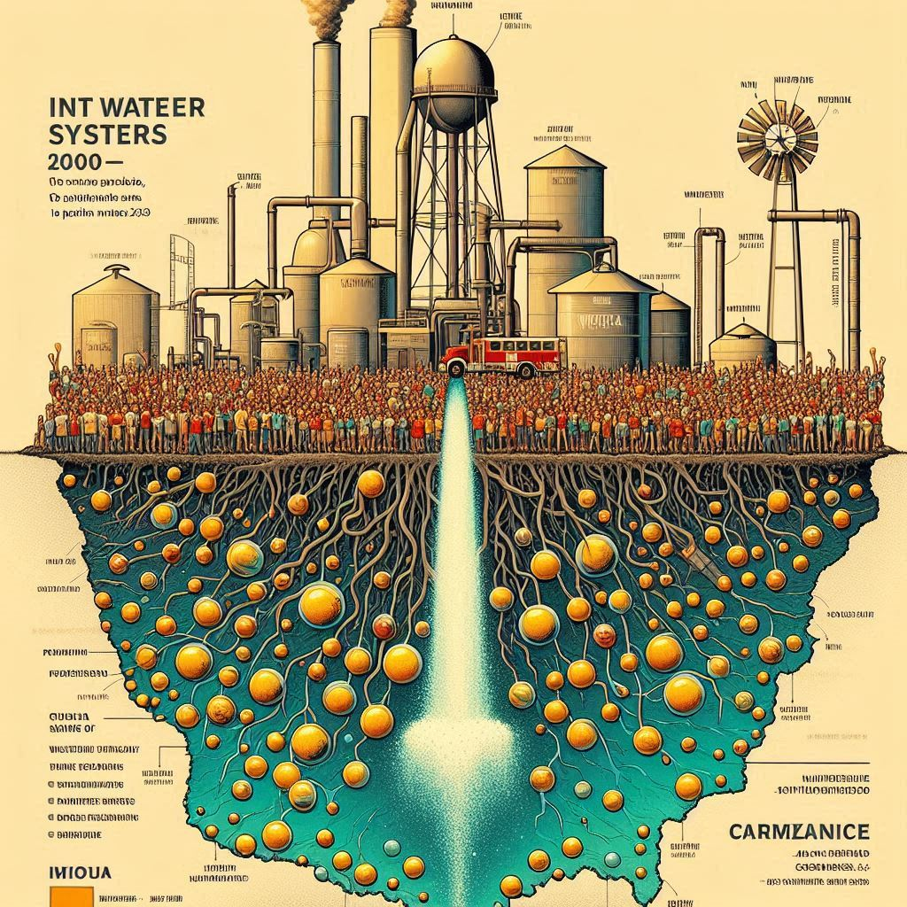

This study examines nitrate concentrations in Iowa's public water systems over the period of 2000 to 2023, taking into account factors such as well-construction timeframes, water source types, and population categories. Using extensive datasets, we explored trends in nitrate concentrations across these factors to assess health risks and provide insights for water resource management.
Our data indicates that nitrate levels varied significantly between wells constructed in different periods: those built before 1990, between 1990 and 2010, and after 2010. Pre-1990 wells exhibited the most fluctuation and frequently exceeded the EPA's 10 mg/L limit for nitrate content. In contrast, wells built after 2010 demonstrated more consistent and lower nitrate levels, suggesting improvements in well construction and monitoring practices.
The study also examined nitrate levels in groundwater compared to surface water. Groundwater sources showed consistently higher nitrate concentrations, reflecting Iowa's agricultural practices and land use. Additionally, the study found that shallower wells (<500 ft) are more vulnerable to nitrate contamination compared to deeper wells (500-1000 ft and >1000 ft).
When analyzing systems by population size, we observed that smaller systems (serving <3300 people) are more severely impacted by elevated nitrate levels. This finding underscores the necessity of targeted water quality interventions for smaller communities to ensure safe drinking water.
Our research emphasizes the importance of regular monitoring and adaptive management to mitigate nitrate contamination risks in public water supplies. The findings offer valuable insights for policymakers, public health professionals, and water resource managers to guide future public health and water management efforts.
Related Articles
- Islam, S. S., Cwiertny, D. M., & Demir, I. (2024). Nitrate Levels in Iowa's Public Water Systems: Trends, Sources, and Population Impact (2000-2023).

Nitrate concentration trends in Iowa's public water systems over time.